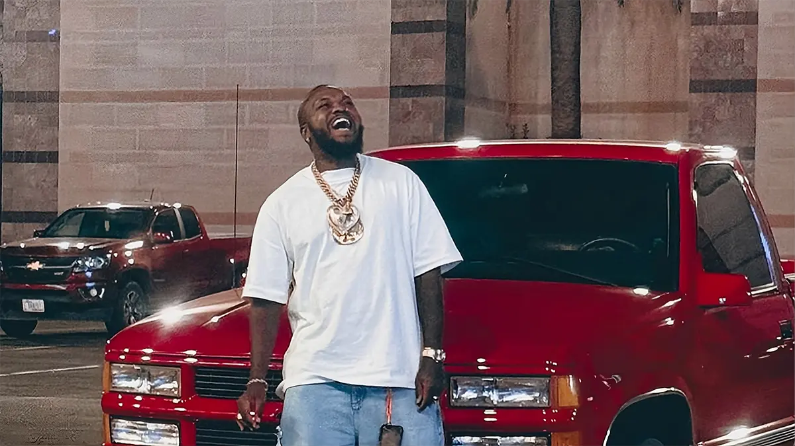

Início
Djonga começou a ganhar reconhecimento na cena do rap brasileiro por meio de batalhas de MCs e trabalhos independentes.
Um dos grandes nomes do rap brasileiro

Djonga é o nome artístico de Gustavo Pereira Marques, rapper, compositor e produtor musical brasileiro, conhecido por suas letras marcantes e por abordar temas como desigualdade social, racismo, identidade e experiências da população negra.
Natural de Belo Horizonte, Minas Gerais, Djonga tornou-se uma das figuras de destaque da nova geração do rap nacional.
Djonga começou a ganhar reconhecimento na cena do rap brasileiro por meio de batalhas de MCs e trabalhos independentes.
Ao longo de sua carreira, o artista lançou diversos projetos que ampliaram sua presença no cenário musical brasileiro e conquistaram grande público.
Suas músicas combinam rap, elementos de diferentes gêneros musicais e uma forte preocupação com questões sociais, políticas e culturais.
Entre os trabalhos que marcaram a carreira de Djonga estão:
Djonga utiliza sua música como forma de expressão e reflexão sobre questões relacionadas à população negra, à periferia e às desigualdades presentes na sociedade.
Seu trabalho contribuiu para fortalecer o rap como uma importante manifestação cultural e artística no Brasil.